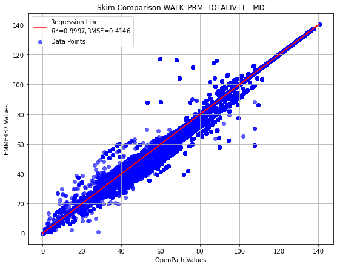
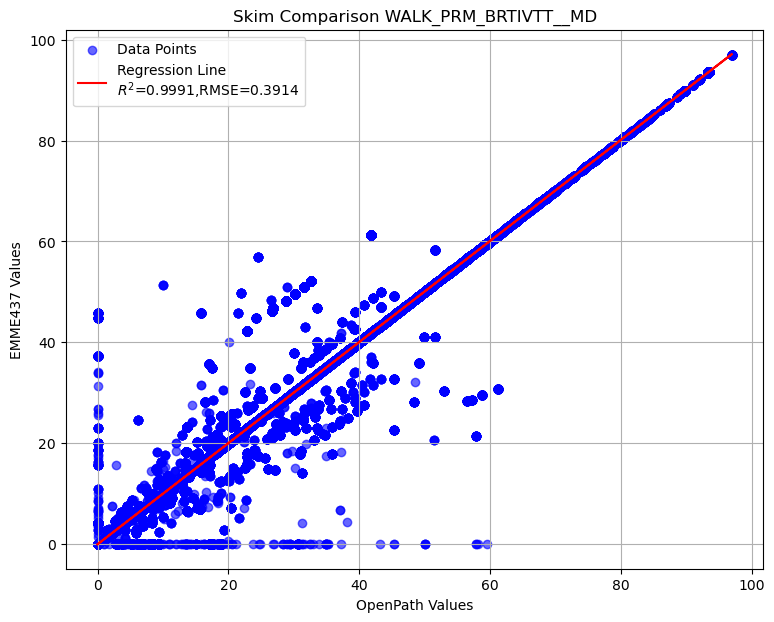
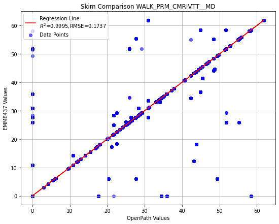
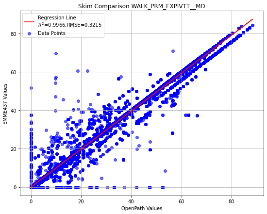
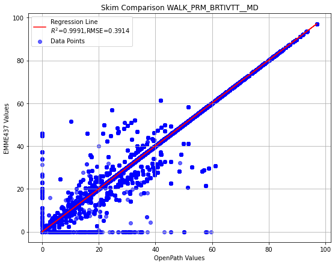

EMME OpenPath: T:\STORAGE-63T\ABM3_EMME_upgrade\2022_v1521_2\output\skims\transit_skims_MD.omx
EMME 4.3.7: T:\STORAGE-63T\2025RP_draft\abm_runs_v2\2022_S0_v2\output\skims\transit_skims_MD.omxMD
User Inptus
Scatterplot Comparison of MD Peak for WALK PRM modes assignment
Scatterplot comparison of MD Peak total actual in-vehicle travel time by walk premium
Intercept: 0.0006
Slope: 0.9991
R² Score: 0.9997
RMSE: 0.4146
Scatterplot comparison of MD Peak actual in-vehicle travel time on LRT mode by walk premium
Intercept: 0.0033
Slope: 0.9969
R² Score: 0.9981
RMSE: 0.5535
Scatterplot comparison of MD Peak actual in-vehicle travel time on commuter rail mode by walk premium
Intercept: 0.0004
Slope: 0.9998
R² Score: 0.9995
RMSE: 0.1737
Scatterplot comparison of MD Peak actual in-vehicle travel time on express bus mode by walk premium
Intercept: 0.0051
Slope: 0.9887
R² Score: 0.9966
RMSE: 0.3215
Scatterplot comparison of MD Peak actual in-vehicle travel time on BRT mode by walk premium
Intercept: 0.0028
Slope: 1.0015
R² Score: 0.9991
RMSE: 0.3914
Summary of transit MD skim comparison (EMME OpenPath - EMME 4.3.7)
To display the top 5 rows of skim comparison (sort by WALK_PRM_TOTALIVTT__MD)
| Origin | Destination | WALK_PRM_TOTALIVTT__MD | WALK_PRM_LRTIVTT__MD | WALK_PRM_CMRIVTT__MD | WALK_PRM_EXPIVTT__MD | WALK_PRM_LTDEXPIVTT__MD | WALK_PRM_BRTIVTT__MD | |
|---|---|---|---|---|---|---|---|---|
| 8800773 | 1780 | 61 | 48.645241 | 42.121690 | -51.852757 | 23.488352 | 0.0 | 34.887959 |
| 8380278 | 1695 | 61 | 48.645241 | 42.121690 | -51.852757 | 23.488352 | 0.0 | 34.887959 |
| 9335049 | 1888 | 61 | 48.645241 | 42.121690 | -51.852757 | 23.488352 | 0.0 | 34.887959 |
| 7450239 | 1507 | 58 | 48.328426 | 41.804875 | -51.852757 | 23.488352 | 0.0 | 34.887959 |
| 7450254 | 1507 | 73 | 48.328426 | 41.804875 | -51.852757 | 23.488352 | 0.0 | 34.887959 |
Below is the summary of select matrices difference in transit MD skim
count 2.447281e+07
mean 9.383656e-03
std 4.151534e-01
min -5.777894e+01
25% 0.000000e+00
50% 0.000000e+00
75% 0.000000e+00
max 4.864524e+01
Name: WALK_PRM_TOTALIVTT__MD, dtype: float64count 2.447281e+07
mean 1.178389e-02
std 5.548392e-01
min -5.338018e+01
25% 0.000000e+00
50% 0.000000e+00
75% 0.000000e+00
max 4.924223e+01
Name: WALK_PRM_LRTIVTT__MD, dtype: float64count 2.447281e+07
mean -1.301449e-04
std 1.737217e-01
min -5.813091e+01
25% 0.000000e+00
50% 0.000000e+00
75% 0.000000e+00
max 5.844205e+01
Name: WALK_PRM_CMRIVTT__MD, dtype: float64count 2.447281e+07
mean 6.690432e-03
std 3.276107e-01
min -5.979222e+01
25% 0.000000e+00
50% 0.000000e+00
75% 0.000000e+00
max 5.249318e+01
Name: WALK_PRM_EXPIVTT__MD, dtype: float64count 24472809.0
mean 0.0
std 0.0
min 0.0
25% 0.0
50% 0.0
75% 0.0
max 0.0
Name: WALK_PRM_LTDEXPIVTT__MD, dtype: float64count 2.447281e+07
mean -8.960526e-03
std 3.918944e-01
min -4.588618e+01
25% 0.000000e+00
50% 0.000000e+00
75% 0.000000e+00
max 5.955362e+01
Name: WALK_PRM_BRTIVTT__MD, dtype: float64Let’s check the records with difference in WALK_PRM_LRTIVTT__MD greater than 40
| Origin | Destination | WALK_PRM_TOTALIVTT__MD | WALK_PRM_LRTIVTT__MD | WALK_PRM_CMRIVTT__MD | WALK_PRM_EXPIVTT__MD | WALK_PRM_LTDEXPIVTT__MD | WALK_PRM_BRTIVTT__MD | |
|---|---|---|---|---|---|---|---|---|
| 294413 | 60 | 2541 | 15.047424 | 49.242229 | -51.379276 | -28.198317 | 0.0 | 45.382790 |
| 339160 | 69 | 2765 | 11.993317 | 49.242229 | -49.327763 | -33.303932 | 0.0 | 45.382790 |
| 7450239 | 1507 | 58 | 48.328426 | 41.804875 | -51.852757 | 23.488352 | 0.0 | 34.887959 |
| 7450244 | 1507 | 63 | 48.328426 | 41.804875 | -51.852757 | 23.488352 | 0.0 | 34.887959 |
| 7450248 | 1507 | 67 | 48.328426 | 41.804875 | -51.852757 | 23.488352 | 0.0 | 34.887959 |
| 7450254 | 1507 | 73 | 48.328426 | 41.804875 | -51.852757 | 23.488352 | 0.0 | 34.887959 |
| 8380278 | 1695 | 61 | 48.645241 | 42.121690 | -51.852757 | 23.488352 | 0.0 | 34.887959 |
| 8800773 | 1780 | 61 | 48.645241 | 42.121690 | -51.852757 | 23.488352 | 0.0 | 34.887959 |
| 9335049 | 1888 | 61 | 48.645241 | 42.121690 | -51.852757 | 23.488352 | 0.0 | 34.887959 |
Let’s check the records with difference in WALK_PRM_LRTIVTT__MD less than -50
| Origin | Destination | WALK_PRM_TOTALIVTT__MD | WALK_PRM_LRTIVTT__MD | WALK_PRM_CMRIVTT__MD | WALK_PRM_EXPIVTT__MD | WALK_PRM_LTDEXPIVTT__MD | WALK_PRM_BRTIVTT__MD | |
|---|---|---|---|---|---|---|---|---|
| 12407314 | 2509 | 239 | -57.778938 | -53.38018 | 25.664801 | 0.0 | 0.0 | -30.063560 |
| 12407327 | 2509 | 252 | -57.778938 | -53.38018 | 25.664801 | 0.0 | 0.0 | -30.063560 |
| 12407328 | 2509 | 253 | -57.778938 | -53.38018 | 25.664801 | 0.0 | 0.0 | -30.063560 |
| 12407336 | 2509 | 261 | -57.778938 | -53.38018 | 25.664801 | 0.0 | 0.0 | -30.063560 |
| 12407338 | 2509 | 263 | -57.778938 | -53.38018 | 25.664801 | 0.0 | 0.0 | -30.063560 |
| ... | ... | ... | ... | ... | ... | ... | ... | ... |
| 14697558 | 2972 | 22 | -16.834229 | -53.38018 | 58.442051 | 0.0 | 0.0 | -21.896101 |
| 14786604 | 2990 | 22 | -16.834229 | -53.38018 | 58.442051 | 0.0 | 0.0 | -21.896101 |
| 15058689 | 3045 | 22 | -16.833221 | -53.38018 | 58.442051 | 0.0 | 0.0 | -21.895094 |
| 15078477 | 3049 | 22 | -16.833221 | -53.38018 | 58.442051 | 0.0 | 0.0 | -21.895094 |
| 15548442 | 3144 | 22 | -16.833221 | -53.38018 | 58.442051 | 0.0 | 0.0 | -21.895094 |
151 rows × 8 columns
Choosing top 25 of WALK_PRM_TOTALIVTT__MD| Origin | Destination | WALK_PRM_TOTALIVTT__MD | |
|---|---|---|---|
| 12407314 | 2509 | 239 | -57.778938 |
| 12407361 | 2509 | 286 | -57.778938 |
| 12407407 | 2509 | 332 | -57.778938 |
| 12407405 | 2509 | 330 | -57.778938 |
| 12407392 | 2509 | 317 | -57.778938 |
| 12407391 | 2509 | 316 | -57.778938 |
| 12407387 | 2509 | 312 | -57.778938 |
| 12407386 | 2509 | 311 | -57.778938 |
| 12407385 | 2509 | 310 | -57.778938 |
| 12407382 | 2509 | 307 | -57.778938 |
| 12407366 | 2509 | 291 | -57.778938 |
| 12407364 | 2509 | 289 | -57.778938 |
| 12407356 | 2509 | 281 | -57.778938 |
| 12407327 | 2509 | 252 | -57.778938 |
| 12407355 | 2509 | 280 | -57.778938 |
| 12407353 | 2509 | 278 | -57.778938 |
| 12407352 | 2509 | 277 | -57.778938 |
| 12407349 | 2509 | 274 | -57.778938 |
| 12407346 | 2509 | 271 | -57.778938 |
| 12407344 | 2509 | 269 | -57.778938 |
| 12407339 | 2509 | 264 | -57.778938 |
| 12407338 | 2509 | 263 | -57.778938 |
| 12407336 | 2509 | 261 | -57.778938 |
| 12407328 | 2509 | 253 | -57.778938 |
| 12407412 | 2509 | 337 | -57.778938 |